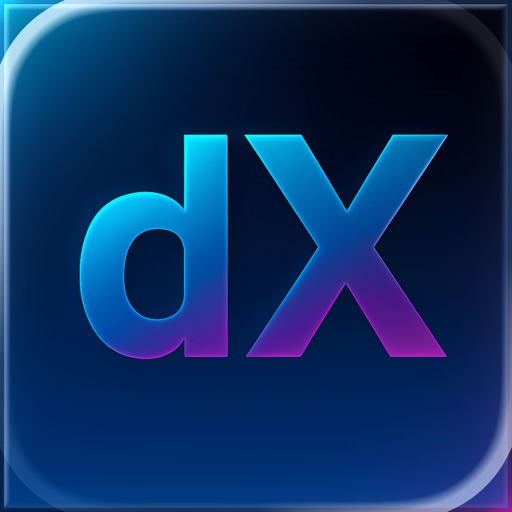
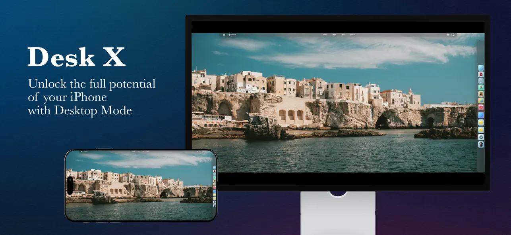
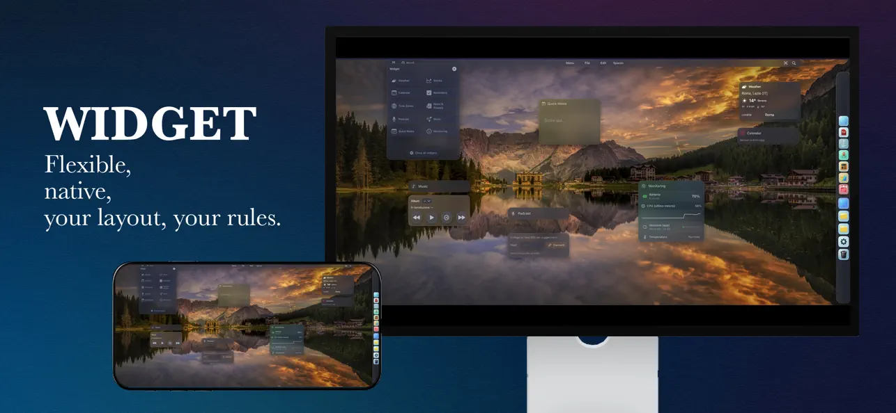
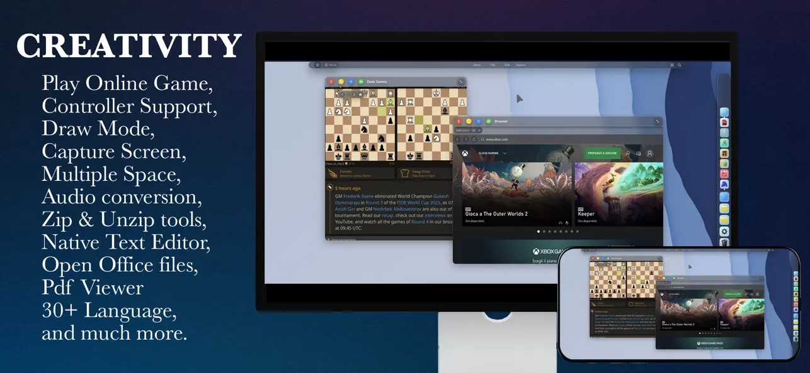
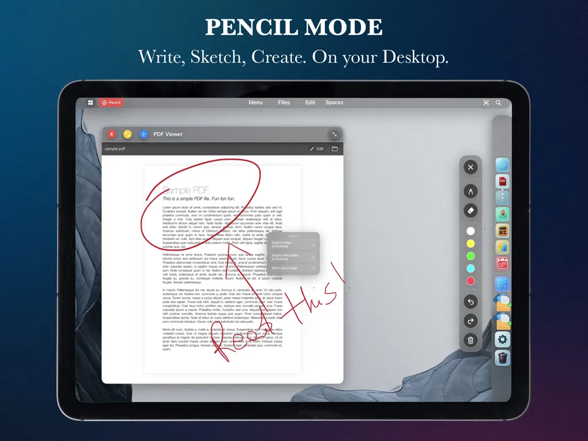
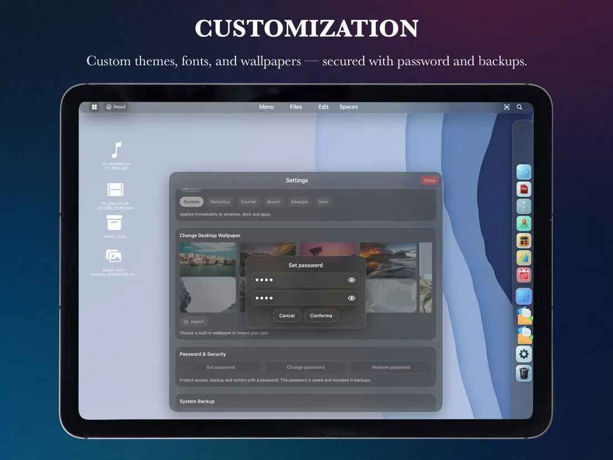

Real desktop
Icons, folders, files and overlapping windows stay within reach, with a customizable dock for your favorite apps.

Productivity for iPhone and iPad
Turn your iPhone or iPad into a real desktop workspace: windows, folders, files, dock, multitasking, widgets and an integrated browser.





Main features
Icons, folders, files and overlapping windows stay within reach, with a customizable dock for your favorite apps.
Use HDMI or DisplayPort adapters and let DeskX adapt the workspace to large screens when connected.
Browse with tabs, downloads and fullscreen gamepad support, or turn frequently used websites into dedicated Web Apps.
Manage archives, documents, maps, notes, audio workflows, calculators, finance widgets and quick productivity tools.
Create separate desktops for work, study or creativity, then tune themes, wallpapers, fonts and accent colors.
Protect the environment with an access password and export your complete system with backup and restore.
Compatibility
On iPhone, desktop mode is designed for external displays. On iPad, the desktop is available on the built-in display or mirrored to an external screen.